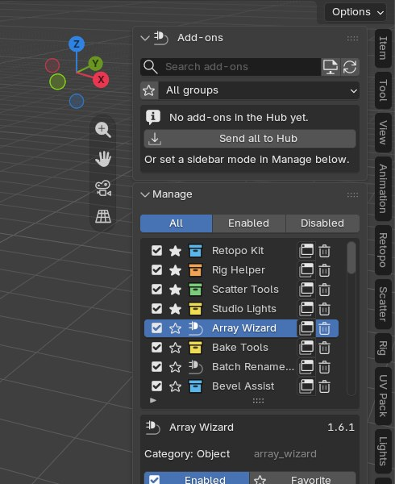
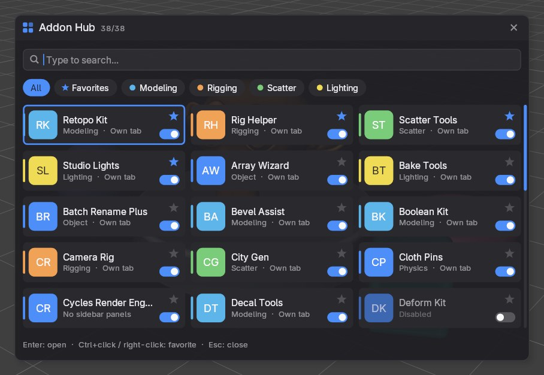
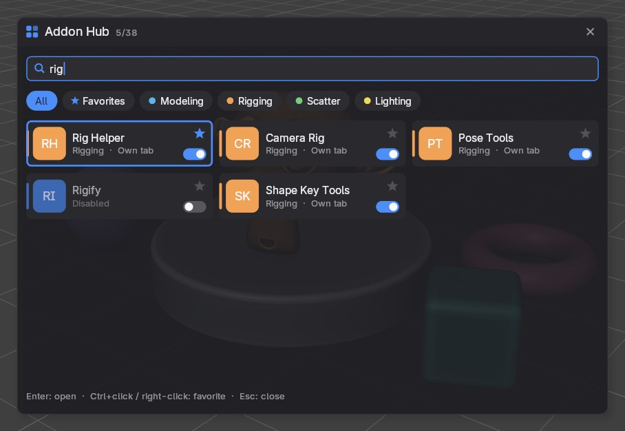
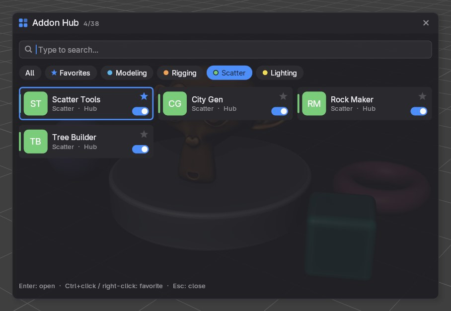
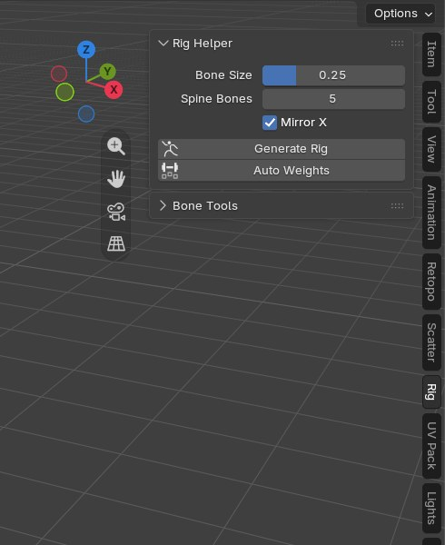
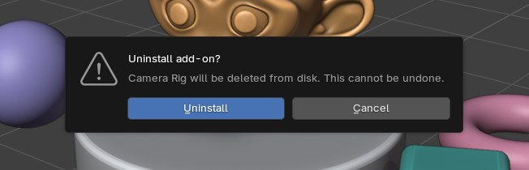
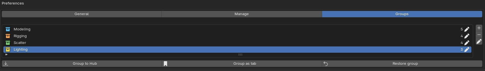

Addon Hub is a Blender extension. You get one .zip file that works on every platform. Do not unzip it.
.zip onto the Blender window, or go to Edit › Preferences › Get Extensions, open the ▾ menu in the top right and choose Install from Disk…Install the new .zip the same way. Blender replaces the old version and your favorites, groups and sidebar modes are kept.
Want your tabs back? Open Manage at the bottom of the Hub tab and click Restore all.


| Place | What is there |
|---|---|
| Ctrl+Alt+N in the 3D Viewport | The launcher: search, open, favorite and enable/disable any add-on. |
| 3D Viewport › Sidebar › Addon Hub | The Add-ons panel with search, filters and the add-ons you sent to the Hub; below it the collapsed Manage panel with its Groups sub-panel. |
| Edit › Preferences › Add-ons › Addon Hub | Three pages: General (language, launcher look, hotkey), Manage and Groups, with more room than the sidebar. |
The launcher is drawn by Addon Hub itself on top of the 3D Viewport. It shows every installed add-on as a tile: a colored badge with its initials, the name, its group or category and its sidebar mode, a favorite star and an on/off switch. Disabled add-ons are shown dimmed.

| Action | Result |
|---|---|
| Click a tile | Opens the add-on (see below) and closes the launcher. |
| Click the star, Ctrl+click or right-click a tile | Adds or removes the favorite. |
| Click the switch | Enables or disables the add-on. |
| Click a chip | Filters by All, Favorites or one of your groups. |
| Mouse wheel | Scrolls the tiles. Outside the launcher, the wheel still zooms the viewport. |
| Click outside, or the × | Closes the launcher. |
| Key | Result |
|---|---|
| Any letter or number | Types into the search. Search matches the name, category, module and group, and every word must match. |
| ↑ ↓ ← → | Moves the selection between tiles. |
| Enter | Opens the selected add-on. |
| Tab / Shift+Tab | Next / previous filter chip. |
| Backspace / Ctrl+Backspace | Deletes one character / clears the search. |
| Ctrl+V | Pastes into the search. |
| Esc or Ctrl+Alt+N | Closes the launcher. |


Each add-on with sidebar panels has a sidebar mode. It decides where its panels appear in the 3D Viewport's sidebar.
| Mode | What happens |
|---|---|
| Own tab (default) | The add-on keeps its original tab, exactly as without Addon Hub. |
| Hub | The add-on's tab disappears. Its panels show up inside the Addon Hub tab when you select it there or open it from the launcher. |
| Custom tab | The add-on's panels move to a tab with a name you choose. Several add-ons can share one custom tab. Pick New custom tab… to create one. |
| Hidden | The add-on stays enabled, but its sidebar panels are not shown. Useful for add-ons you only use through menus or shortcuts. |
Change the mode of one add-on with the mode button in its row in Manage, or for many at once with All to Hub / Restore all and the group buttons.
The Add-ons panel at the top of the tab lists the add-ons in Hub mode: favorites first, then each group, then the rest under Other.
When an add-on is open in the Hub, the Manage panel is hidden so the add-on's own panels stay at the top. Close the add-on (×) to see Manage again.

Manage lists every installed add-on and extension. It is at the bottom of the Addon Hub tab and, larger, in Edit › Preferences › Add-ons › Addon Hub › Manage.
Enabled checkbox, favorite star, group color, name, sidebar mode button and a trash button to uninstall. Filter the list with All, Enabled and Disabled.
| Item | What it does |
|---|---|
| Version, category | From the add-on itself. |
| Enabled | Turns the add-on on or off. |
| Favorite | Adds or removes the star. |
| Group | Puts the add-on into a group, or creates a new group for it. |
| Sidebar | The sidebar mode (see section 5). |
| Original tab | The tab name the add-on uses by itself. |
| Open | Same as opening it from the launcher. |
| Preferences | Jumps to the add-on's page in Blender's Preferences. |
| Uninstall | Deletes the add-on from disk after a confirmation. |
At the bottom: All to Hub sends every add-on with sidebar panels to the Hub; Restore all puts every add-on back into its own tab.


Enabling and disabling add-ons is stored in Blender's own preferences. If Auto-Save Preferences is off in your Blender, Manage shows a Save Preferences button when there are unsaved changes.
Star an add-on in the launcher (click the star, Ctrl+click or right-click the tile) or in Manage. Favorites come first in the launcher and in the Hub tab, and the Favorites chip shows only them.
Open Manage › Groups (or the Groups page in the preferences).
| Button | What it does |
|---|---|
| Group to Hub | Sends the group's add-ons to the Hub tab. |
| Group as tab | Merges the group's add-ons into one custom tab named after the group. |
| Restore group | Puts the group's add-ons back into their own tabs. |

Edit › Preferences › Add-ons › Addon Hub › General:
| Setting | Default | What it does |
|---|---|---|
| Language | English | Interface language of Addon Hub: English or Türkçe. |
| Accent color | Blue | Color of the launcher's highlights, active chip and switches. |
| Background | Dark grey | Background color of the launcher. |
| Opacity | 0.96 | Launcher opacity, 0.5 to 1.0. |
| Hotkey | Ctrl+Alt+N | Change the launcher shortcut right here. It works in the 3D Viewport. |
| Settings file | Shows where your favorites, groups and modes are saved. |
The mouse must be over a 3D Viewport. Check the Hotkey in the General page of the preferences; another add-on may use the same shortcut, so pick a different one there. You can also open the launcher with the button in the Addon Hub tab.
Many add-ons show their panels only in a certain mode or with a certain object selected (for example Edit Mode, or an armature). Addon Hub switches to the right tab, but the add-on's own rules decide whether its panels show.
Only add-ons in Hub mode are listed there. Check its mode in Manage, and clear the search, the favorites star and the group filter at the top of the tab.
Click Refresh in the Addon Hub tab. The list also refreshes on its own when add-ons are enabled.
When a panel moves to another tab, Blender puts it at the end of that tab and resets whether it is expanded. This can also happen after Restore in tabs that several add-ons share. Nothing else changes.
Click Restore all in Manage, or simply disable Addon Hub. Every add-on returns to its own tab.
No. Addon Hub never connects to the network. It only reads your installed add-ons and writes its own settings file.
| Item | Supported |
|---|---|
| Blender | 4.2 and newer, tested on 4.5 LTS and 5.2 |
| Platforms | Windows, macOS and Linux (pure Python, one zip for all) |
| Works on | Legacy add-ons and Blender 4.2+ extensions |
| Sidebar | The 3D Viewport sidebar (N panel) |
| Languages | English, Türkçe |
| Network | Not used |